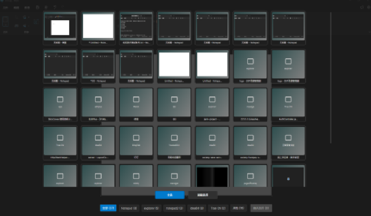

1. 简介
SlickZones 是一个功能强大的窗口管理器实用工具，可帮助你将窗口排列并贴入自定义布局，以提高工作效率和工作流效率。此实用工具允许你将桌面上的特定区域位置定义为窗口的目标，在拖动到区域或通过键盘快捷方式激活时自动调整大小并重新定位它们。通过智能的区域划分和热键控制，让用户能够快速地将窗口排列到预定义的区域中，提升多任务处理效率。SlickZones 是提升工作效率的理想窗口管理工具。
核心功能特性：
SlickZones 界面如下：

SlickZones 主界面
1.1 将窗口对齐到单个区域
首先需要先设置布局，在通用配置下面的布局编辑器，点击打开，会出现当前显示器和可以选择的模板列表，点击选择希望的布局，并且启用 SlickZones 后，就可以拖动窗口。这是 SlickZones 窗口管理的基础功能，通过窗口对齐可以快速整理桌面布局。

布局编辑器界面
默认情况下，还需选择并按住 Shift。你将看到区域出现。移动鼠标时，将鼠标悬停在某个区域上将突出显示该区域，松开鼠标后，窗口将移动到该区域对齐。这种窗口对齐方式大大提高了窗口管理的效率。

拖拽窗口到指定区域
如果希望批量拖动多个窗口，那么可以按激活布局区域快捷键，默认情况下是 Shift+Alt+Z，你可以看到布局区域预览，这时可以用鼠标点击拖动窗口到某个区域，松开鼠标后，窗口将移动到该区域对齐，并增加到当前窗口组。通过这种方式，你可以快速完成多个窗口的布局调整。
1.2 一键分布窗口
在设置了布局后，可以使用一键分布窗口（默认Shift+Alt+A），打开分布窗口，如下：

一键分布窗口
上面是显示窗口的预览图（最小化无法显示预览图），下部分是进程分组，按照进程显示所有窗口，可以点击全选或者点击窗口预览图选择，在选择窗口后，可以点击确认选择按钮，就会对选择的窗口进行按照布局排列。
1.3 窗口组
窗口组是将拖拽到布局区域的窗口归为一组，便于同时隐藏或显示。你还可以预设多个窗口组，定义布局与窗口匹配规则（例如窗口标题、进程名），并通过快捷键（默认 Shift+Alt+X）在窗口组间切换与快速排列窗口。
1.3.1 创建窗口组
在主界面滚动到下方，可以看到窗口组配置，点击新增按钮，打开新增窗口组向导窗口。

首先选择窗口组需要使用的布局模板，选择后点击下一步。

配置窗口匹配规则，可以创建新规则，也可以选择已经存在的规则，规则有两种类型：
- 进程名称：匹配系统进程的名称
- 窗口名称：匹配窗口的标题名称
两种类型都支持包含、前匹配、后匹配的匹配方式。匹配值输入需要进行匹配的内容，如果有多个值使用逗号（英文逗号）分隔。可以支持多个匹配规则。配置完成匹配规则后，点击下一步。

选择布局模板
配置窗口组的名称和描述信息，可以查看配置摘要是否符合要求，点击完成按钮，完成窗口组的创建。

1.3.2 快速切换窗口组
可以通过切换窗口组快捷键打开切换窗口，默认情况下是 Shift+Alt+X。

配置窗口组信息
在显示的窗口组列表卡片中，点击卡片区域就会自动切换窗口组，其布局和窗口会按照窗口组的配置进行自动排列。
1.3.3 显示/隐藏窗口组
将窗口拖到某个区域对齐后，会注册进入窗口组，可以使用快捷键；或者切换了自动的窗口组，默认情况下是 Shift+Alt+D，对这一组窗口进行隐藏或者显示，隐藏的方式有最小化窗口（默认）、隐藏（任务栏不可见）。
1.3.4 编辑和删除窗口组
在主界面滚动到下方，可以看到窗口组配置，点击管理按钮，打开窗口组管理窗口。

切换窗口组界面
可以点击窗口组卡片的编辑打开窗口组编辑向导窗口，编辑流程和创建窗口组流程一样；或者点击删除可以移除存在的窗口组。
1.4 购买、充值和试用软件
本软件为收费服务，按月订阅计费。请在购买或续费前确认您的订阅计划；开发与维护由独立开发人员承担，持续的功能更新、技术支持与服务器运行都依赖订阅收入，您的付费不仅能获得稳定、高质量的产品与服务，也在实质上支持开发者的生活与长期投入。感谢您的理解与支持，如有疑问请联系客户服务。
1.4.1 试用软件
提供为期 14 天的免费试用，试用需通过账户开启，每个账户仅限使用一次。欢迎在试用期间充分体验功能，如有疑问请联系客服。

试用软件
在软件主界面，有软件授权信息显示，有试用和购买按钮，如需试用点击试用按钮即可。
1.3.2 购买和充值软件
如需购买软件，可以在软件授权信息显示的右侧，点击购买按钮，软件提供三种服务，月卡、季卡和年卡。账户的余额是充值的货币，100点=1元。
如需购买软件，可以点击购买预付费卡按钮，会打开淘宝页面，在淘宝进行购买后，把预付费卡号填入下方的预付费卡输入文本框，选择需要的服务，点击充值并购买即可。

编辑窗口组界面
1.4 介绍说明
启用/关闭功能：该功能用于启用或者停用 SlickZones 软件，如果授权过期将无法启用。
软件授权：该功能用户显示软件授权信息，如果软件授权信息大于 7 天将不显示。
托盘图标：软件登录成功后，会启动托盘图标，可以在托盘图标打开主界面、购买服务、新增窗口组等快捷操作。
1.4.1 通用设置
打开布局编辑器：在使用软件前，必须选择一个布局，通过打开布局编辑器来选择布局。
激活布局区域快捷键：用来批量移动多个窗口时，显示布局区域的快捷键。
随系统启动：启用后，软件将随着系统启动而自动启动。
1.4.2 区域行为
拖拽窗口按住 Shift 键来激活区域：启用时，在拖拽窗口并按下 Shift 按键，则会出现布局区域，可以拖拽窗口到区域内。
切换窗口时间间隔（毫秒）：拖拽窗口后，下一次拖拽窗口的间隔时间。
1.4.3 窗口组配置
窗口组管理：可以创建或者管理已经创建的窗口组。
切换窗口组快捷键：可以快速切换已经创建的窗口组。
显示/隐藏窗口组快捷键：显示/隐藏窗口组的所有窗口
显示/隐藏窗口组模式：设置隐藏窗口组的模式，最小化：表示窗口最小化，任务栏可见；隐藏：则在任务栏不可见。
1.4.4 区域外观
颜色设置：设置布局区域的颜色布局，如果选择定义，则可以设置高亮颜色、非活动颜色、边框颜色和文字颜色。
显示区域编号：在布局区域窗口的区域上显示编号文字。
透明度：设置布局区域窗口的透明度。